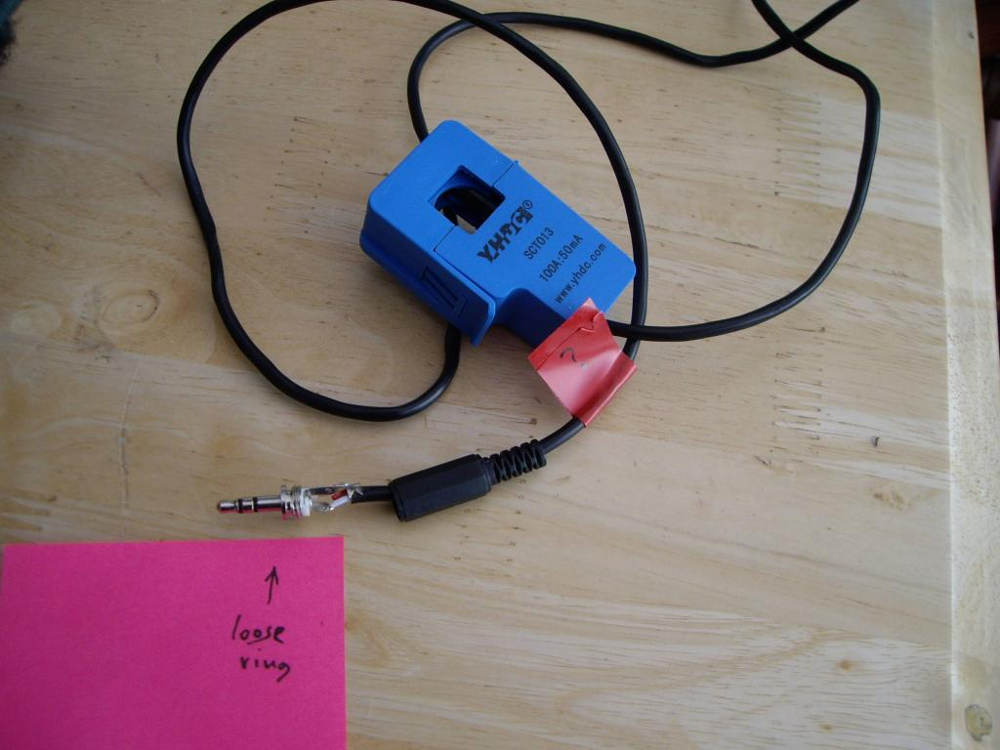

While assembling a multi-CT rig recently, one of my brand new CTs did not appear to be working. Having taken it apart, it turns out that there was a short circuit inside the casing. With this removed, it now works fine.
{kind=link}
The CT's cable is twin-core with an outer sheath. The active connectors are the two internal cores which have red and white insulation. The outer braid is not connected at either end, at least, it's not intended to be.
In practice, because of limited space, the outer braid at the jack plug end tends to get trapped against the 'red' core. That's not a problem providing that it does not also come into contact with the 'white' core at the other end. In my case, I think the outer braid was chafing against the lead of the suppression component that's connected to the 'white' core. Once the offending strands of braid had been cut away, and some insulating tape added for good measure, normal service was resumed.
Unless a spare pair of hands is available, getting these CTs apart can be rather awkward. By inserting a couple of matchsticks to hold the plastic springs back, the internals can usually be extracted without much difficulty.
Re: Dodgy CT
I'm not sure what the screen does - apart from adding stray capacitance. Any connection to the plug sleeve seems to be, at least on the ones I've looked at, entirely fortuitous. It's certainly neither deliberately soldered nor trapped under the "clamp".
It would make far more sense (but necessitates a change to the pcb on the emonTx and Shield, and a wiring change in the plug) to connect the secondary to tip and ring and the screen to the sleeve - then the screen could be earthed and it would be of some use.
I've found the best quick way of dealing with a screen that you don't want to connect to (i.e. at the secondary winding) is to pull the cable cover as far back as possible whilst holding on to the screen, then snip the screen as close as possible and let the cover return. With luck, the screen will now be buried a few millimeters back under the cover out of harm's way.
The proper way is unsolder the inner cores and slip a sleeve over the end of the screen.
Re: Dodgy CT
Pity that YHDC haven't followed your excellent guidance, Robert. A short length of heat-shrink sleeving would be so easy to include during the manufacturing process, but much less so afterwards.
If I was their QA Manager, I would want to see an end to some of these doubtful practices. But I probably wouldn't last there long!
Re: Dodgy CT
I've just found another CT that does not behave as expected. The problem in this case is that the outer ring in the jack-plug is loose, it just spins around freely so is clearly not connected to the tag where the red wire is soldered to.
This particular CT did not come from the OEM Shop. It was supplied directly by the factory at YHDC.

Re: Dodgy CT
I've had exactly that problem with 3.5 mm jack plugs in general - it a matter of the tags and the insulating bushes aren't located quite right when the back end of the tip connector is rivetted over. When the assembly moves a little and everything seats into its proper place, the whole thing is loose. Either a tap with a hammer or a touch with a soldering iron generally cures the problem.
Re: Dodgy CT
Given that I couldn't sell a repaired unit to a customer as new, I've replaced the faulty jack-plug with the 2-way SIL connector that's used all over my PCB. This will be a useful piece of kit for me when checking newly built boards.